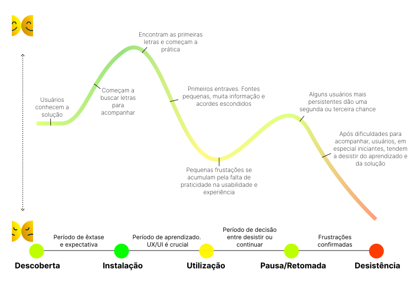

MonkeyPlay
O app para músicos
MonkeyPlay é aquela solução que tem o propósito de oferecer formas mais dinâmicas e customizáveis de acompanhar suas músicas favoritas na hora de tocar!
Com um layout pensado para facilitar a leitura e aprendizado, monte sua biblioteca de músicas, ajuste-as de acordo com seu gosto e dê o play!
Jornada do Usuário
Personas

Bruno, 35
"É casado e tem dois filhos pequenos. Costumava tocar violão quando jovem, mas ultimamente anda muito cansado devido ao trabalho. Hoje em dia a paixão adormecida tem voltado e agora quer praticar mais e melhorar suas habilidades no violão.”

Luiza, 27
“Luiza mora sozinha. Nas horas vagas passa bastante tempo no celular.
Tem se sentido muito estressada ultimamente. Decide iniciar atividades que melhorassem sua saúde física e mental. Começa a buscar formas de aprender a tocar.”
Pesquisa

61% do público é 30+

Violão e guitarra são citados o dobro, comparados a outros instrumentos.

73% utilizam como hobby/prazer, seguidos de 21% por prática e 6% profissionalmente.
88% tem interesse em aprender do zero ou melhorar.

Smartphones são o aparelhos mais ultilizados para acompanhar.
SnackTrem [App Redesign]
Projeto de Graduação em Desenho Industrial, UFRJ
SnackTrem foi idealizado e projetado para ser uma solução de vending machine mais barata, enxuta e contemporânea ao mundo da IoT (Internet of Things), aliando tecnologia e design.
Inspirado no modelo de negócio de vendas automatizadas dentro de trens e trens-bala de países como Japão e Itália, o projeto utiliza os recursos da automação e interação com os dispositivos móveis para modernizar a forma de comprar snacks e reduzir os custos de fabricação e dimensões do maquinário, bem como aumentar a segurança para o proprietário retirando da máquina a armazenagem de cédulas e moedas.
Black Moon Theater
Cia de Teatro
Projeto de webpage utilizando o método de mobile first e responsividade para os diversos dispositivos da atualidade.
Através do uso de HTML 5, CSS 3, JavaScript, Jquery e a framework Bootstrap.